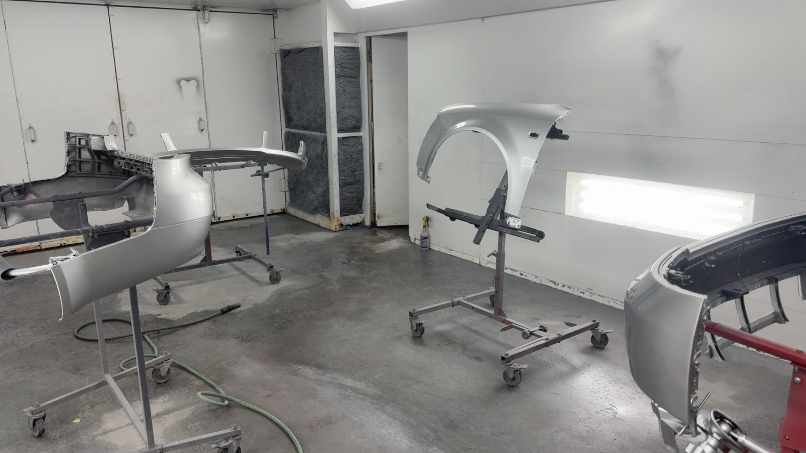
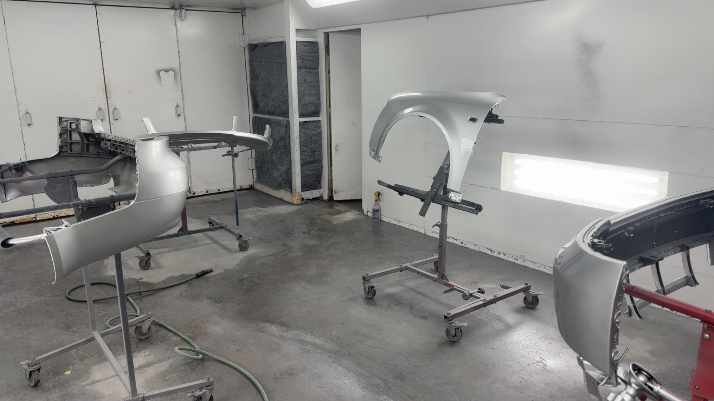

About WKR
WKR is currently a personal conglomerate of projects and experiments. We are always looking to broaden our horizons.
Contact Us
Email: willkeating1@gmail.com Phone #: 518-949-1212
2 Strokes and Turbines
Below are all of WKR’s current projects in the pipeline. Each vehicle must mix both a technical challenge and a personal passion to earn a spot.
The 2011 WRX is fitted with a 20G-TDO6, ID1000's, FMIC, Tial BOV, and a Tial 38mm wastegate. The car is tuned by WKR using cobb accesstuner and RomRaiders maf scaling tools. It Scoots.
 

This car was purchased essentially abandoned, with the ECU and wiring harness cut out of the car, a smashed window, no clutch, and no rear bumper, as well as just about everything else important not functioning. This car furthered my understanding of “Computer Science” as a whole, working with ECU/immobilizer adaptation and EFI issues. The car has been a daily driver for almost 2 years and is coming along nicely.

This bike was run for maybe 30 minutes after purchase until meeting an untimely demise due to the piston ring snapping in half. To be honest, I have no idea how this even happened. After disassembly, we discovered the crankshaft assembly was destroyed, as well as the cylinder. The cylinder and crank were sent out to be repaired. The piston was replaced as well. The bike is in the reassembly phase right now, but will be back on the trails as soon as I find the time to finish it.
WKR is currently a personal conglomerate of projects and experiments. We are always looking to broaden our horizons.
Email: willkeating1@gmail.com Phone #: 518-949-1212